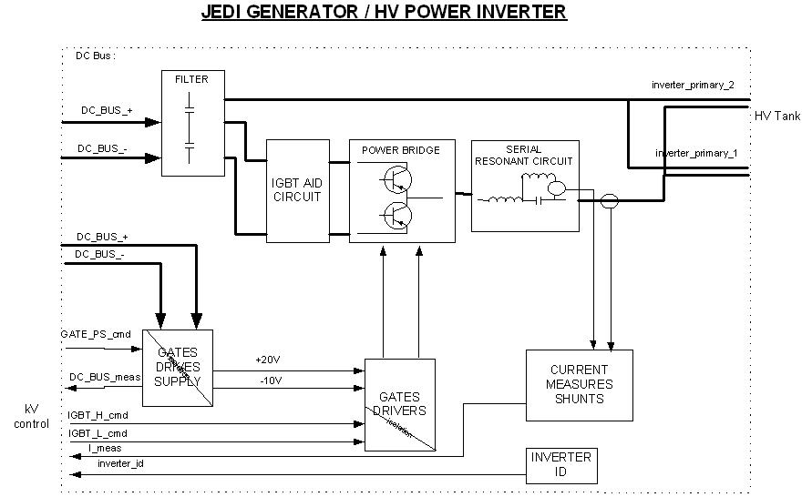

Operating Documentation
Direction 5181166-800, Rev# 7
BrightSpeed Select Service Methods Adv
Operating Documentation |
The HV function involves the following sub-assemblies:
HV power Inverter
HV Tank
Tube
The main features of the function are:
HV power inverter principle is common for all applications. Several tie rings have been defined to cover the 12KW-100KW applications range.
HV Tank principle is common for all applications: 40kV-150kV, 0mA-1000mA max.
Illustration 1: JEDI Generator / HV Power Inverter

The HV power Inverter is a hypo-resonant inverter. Two topologies exist: half-bridge and full bridge. In case of Jedi 60DC and Lite, half-bridge is used.
Power switches used are IGBTs. Depending on the power requirements, either 1 IGBT per polarity is installed (2 IGBTs total) or 2 IGBTs in parallel per polarity for high power applications (4 IGBTs total). In case of Jedi 60DC and Lite, only 2 IGBT are used.
The resonant circuit presents two resonant frequencies:
a serial resonance frequency made by the resonant capacitor and the sum of all the circuit serial inductors ( including the HV transformer leakage inductance ). Its frequency is fixed at 45KHz to 70KHz depending on the inverter tie ring.
a parallel resonance frequency made by the resonant capacitor and the parallel inductance. Its frequency is fixed at 20KHz for all tie rings
The inverter drive frequency is ranging between the parallel frequency and the serial frequency.
The inverter is producing the maximum current when it is commanded near (under) the serial frequency (ex: CT inverter produces 350mA at frequency <=50KHz) and produces the minimum current when it is commanded near (above) the parallel frequency (ex: 0mA at frequency >=20KHz).
Serial and parallel current are measured by current transformers and used by the inverter control for the HV power inverter command (see kV control section).
The HV power inverter is composed of two parts:
the inverter comprising :
heatsink
IGBTs and aid circuit
Gate command board
Parallel inductor
the inverter LC composed of :
Aid and serial inductor
Filtering capacitors
Resonant capacitor
Serial and parallel current measure transformers
Value of resonant elements varies from one application to another because they are linked to the peak power and the average power.
Gate Command
The Gate Command boards used on Jedi 60DC and Lite is supplied from DC bus, due to half bridge topology. IGBTs being connected to the DC Bus, both their gate drivers and the gate drivers’ supply must be isolated from ground.
IGBTs are controlled by the kV control board. The command is isolated by small pulse transformers. They command a semi-power stage which drive the IGBTs gates.
The gate commands have the capability to drive up to two 400A IGBTs in parallel, which is the case for vascular power.
IGBT gate drivers supply is made by a small fly back power supply fed by the DC Bus and regulated by the kV control board ( see kV control section ). The flyback IGBT command is made through a pulse transformer. This supply produces +20V and -10V for IGBTs gates drives.
All inverter commands and measures (including inverter identificator) are going from and to the kV control board through a bridge made by the HV tank kV measure board.
There are two versions of the HV tank depending on polarity: bi-polar HV Tank and mono-polar HV Tank. The mono-polar version has the anode grounded and can go up to 160kV on the cathode side.
Bipolar HV Tank is sealed by the kV measure board placed on top of it. This board must not be removed.
The HV Tank can be used in any position.
A temperature measure is placed in the oil under the cover and is used to track HV Tank temperature and to prevent overheating (max temperature allowed is 67 degrees C).
The HV transformer presents two primary coils connected in serial and to the inverter LC.
Four secondary coils are connected in serial along with their rectifier/filter stage.
The transformer ratio is 417 for 1 and 3 phase input line applications (which lead to a 400VDC-800VDC DC Bus) and is four times higher for battery-powered applications (which lead to a 100VDC-200VDC DC Bus).
Total HV filtering capacitor is 1nF inside the HV tank.
The inverter topology along with this HV filtering capacitor produces a HV ripple in the 40KHz-140KHz range, not measurable at low mA up to a few % at max mA.
Both cathode and anode kV (only cathode in mono-polar version) are measured and reported to the kV control board for kV regulation, kV safeties and tube spits detection.
mA measure is made in the cathode side of the transformer (“anode” side in mono-polar version) and transmitted to the kV control board for mA regulation and safety.